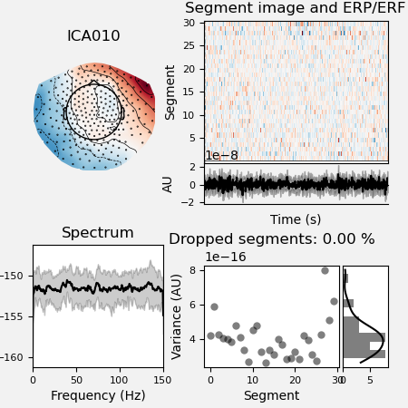
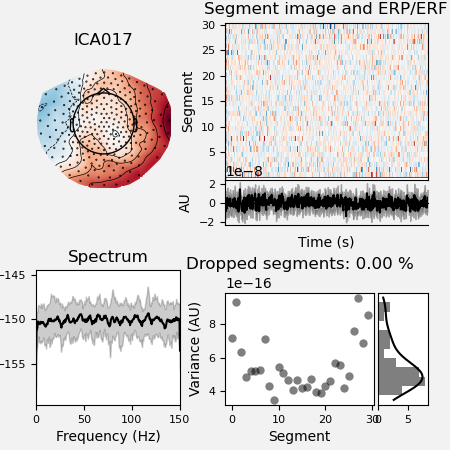
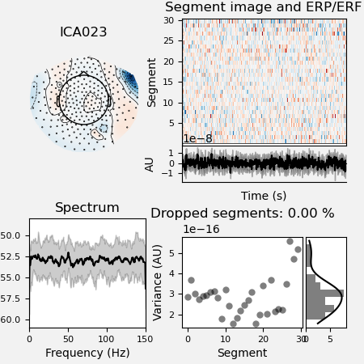
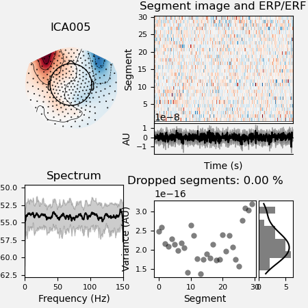
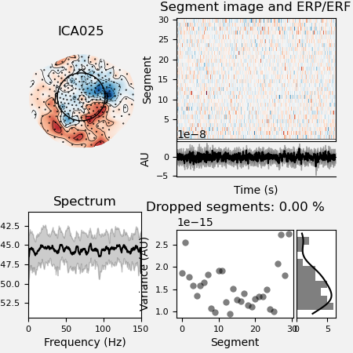
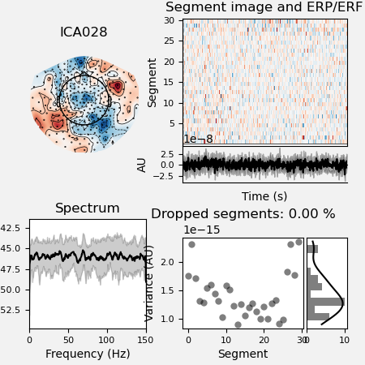

Note
Click here to download the full example code
Preprocess MEG data¶
The preprocessing pipeline runs the ICA algorithm for an automatic removal of eyes and heart related artefacts. A report is automatically generated and can be used to correct and/or fine-tune the correction in each subject.
The input data can be in ds or fif format.
# Authors: Annalisa Pascarella <a.pascarella@iac.cnr.it>
# Mainak Jas <mainakjas@gmail.com>
# License: BSD (3-clause)
# sphinx_gallery_thumbnail_number = 2
import os.path as op
import nipype.pipeline.engine as pe
import ephypype
from ephypype.nodes import create_iterator, create_datagrabber
from ephypype.datasets import fetch_omega_dataset
Let us fetch the data first. It is around 675 MB download.
base_path = op.join(op.dirname(ephypype.__file__), '..', 'examples')
data_path = fetch_omega_dataset(base_path)
then read the parameters for experiment and preprocessing from a
json
file and print it
import json # noqa
import pprint # noqa
params = json.load(open("params.json"))
pprint.pprint({'experiment parameters': params["general"]})
subject_ids = params["general"]["subject_ids"] # sub-003
session_ids = params["general"]["session_ids"] # ses-0001
NJOBS = params["general"]["NJOBS"]
data_type = params["general"]["data_type"]
pprint.pprint({'preprocessing parameters': params["preprocessing"]})
down_sfreq = params["preprocessing"]['down_sfreq']
l_freq = params["preprocessing"]['l_freq']
h_freq = params["preprocessing"]['h_freq']
ECG_ch_name = params["preprocessing"]['ECG_ch_name']
EoG_ch_name = params["preprocessing"]['EoG_ch_name']
variance = params["preprocessing"]['variance']
reject = params["preprocessing"]['reject']
{'experiment parameters': {'NJOBS': 1,
'data_type': 'fif',
'session_ids': ['ses-0001'],
'subject_ids': ['sub-0003'],
'subjects_dir': 'FSF'}}
{'preprocessing parameters': {'ECG_ch_name': 'ECG',
'EoG_ch_name': ['HEOG', 'VEOG'],
'down_sfreq': 300,
'h_freq': 150,
'l_freq': 0.1,
'reject': {'grad': 5e-10, 'mag': 5e-12},
'variance': 0.95}}
Then, we create our workflow and specify the base_dir which tells nipype the directory in which to store the outputs.
# workflow directory within the `base_dir`
preproc_pipeline_name = 'preprocessing_workflow'
main_workflow = pe.Workflow(name=preproc_pipeline_name)
main_workflow.base_dir = data_path
Then we create a node to pass input filenames to DataGrabber from nipype
infosource = create_iterator(['subject_id', 'session_id'],
[subject_ids, session_ids])
and a node to grab data. The template_args in this node iterate upon the values in the infosource node
template_path = '*%s/%s/meg/%s*rest*0_60*raw.fif'
template_args = [['subject_id', 'session_id', 'subject_id']]
datasource = create_datagrabber(data_path, template_path, template_args)
Ephypype creates for us a pipeline which can be connected to these
nodes we created. The preprocessing pipeline is implemented by the function
ephypype.pipelines.preproc_meeg.create_pipeline_preproc_meeg(), thus to
instantiate this pipeline node, we import it and pass our
parameters to it.
The preprocessing pipeline contains two nodes that are based on the MNE
Python functions performing the decomposition of the MEG/EEG signal using an
ICA algorithm.
In particular, the two nodes are:
PreprocFifperforms filtering on the raw dataCompIcacomputes ICA solution on raw fif data
from ephypype.pipelines import create_pipeline_preproc_meeg # noqa
preproc_workflow = create_pipeline_preproc_meeg(
data_path, l_freq=l_freq, h_freq=h_freq, down_sfreq=down_sfreq,
variance=variance, ECG_ch_name=ECG_ch_name, EoG_ch_name=EoG_ch_name,
data_type=data_type)
*** main_path -> /home/pasca/Tools/python/packages/neuropycon/ephypype/examples/sample_BIDS_omega ***
We then connect the nodes two at a time. First, we connect the two outputs (subject_id and session_id) of the infosource node to the datasource node. So, these two nodes taken together can grab data.
main_workflow.connect(infosource, 'subject_id', datasource, 'subject_id')
main_workflow.connect(infosource, 'session_id', datasource, 'session_id')
Similarly, for the inputnode of the preproc_workflow. Things will become clearer in a moment when we plot the graph of the workflow.
main_workflow.connect(infosource, 'subject_id',
preproc_workflow, 'inputnode.subject_id')
main_workflow.connect(datasource, 'raw_file',
preproc_workflow, 'inputnode.raw_file')
To do so, we first write the workflow graph (optional)
main_workflow.write_graph(graph2use='colored') # colored
'/home/pasca/Tools/python/packages/neuropycon/ephypype/examples/sample_BIDS_omega/preprocessing_workflow/graph.png'
and visualize it. Take a moment to pause and notice how the connections here correspond to how we connected the nodes.
import matplotlib.pyplot as plt # noqa
img = plt.imread(op.join(data_path, preproc_pipeline_name, 'graph.png'))
plt.figure(figsize=(6, 6))
plt.imshow(img)
plt.axis('off')
(-0.5, 336.5, 498.5, -0.5)
Finally, we are now ready to execute our workflow.
main_workflow.config['execution'] = {'remove_unnecessary_outputs': 'false'}
# Run workflow locally on 1 CPU
main_workflow.run(plugin='MultiProc', plugin_args={'n_procs': NJOBS})
<networkx.classes.digraph.DiGraph object at 0x7feb8fc75c60>
The output is the preprocessed data stored in the workflow directory defined by base_dir.
It’s a good rule to inspect the report file saved in the same dir to look at the excluded ICA components. It is also possible to include and exclude more components by using either a jupyter notebook or the preprocessing pipeline with different flag parameters.
import mne # noqa
from ephypype.gather import get_results # noqa
ica_files, raw_files = get_results(main_workflow.base_dir,
main_workflow.name, pipeline='ica')
for ica_file, raw_file in zip(ica_files, raw_files):
raw = mne.io.read_raw_fif(raw_file)
ica = mne.preprocessing.read_ica(ica_file)
ica.plot_properties(raw, picks=ica.exclude, figsize=[4.5, 4.5])
- 
- 
- 
- 
- 
- 
Opening raw data file /home/pasca/Tools/python/packages/neuropycon/ephypype/examples/sample_BIDS_omega/preprocessing_workflow/preproc_meeg_pipeline/_session_id_ses-0001_subject_id_sub-0003/ica/sub-0003_task-rest_run-01_meg_0_60_raw_filt_dsamp_ica.fif...
/home/pasca/Tools/python/packages/neuropycon/ephypype/examples/plot_preprocessing.py:166: RuntimeWarning: This filename (/home/pasca/Tools/python/packages/neuropycon/ephypype/examples/sample_BIDS_omega/preprocessing_workflow/preproc_meeg_pipeline/_session_id_ses-0001_subject_id_sub-0003/ica/sub-0003_task-rest_run-01_meg_0_60_raw_filt_dsamp_ica.fif) does not conform to MNE naming conventions. All raw files should end with raw.fif, raw_sss.fif, raw_tsss.fif, _meg.fif, _eeg.fif, _ieeg.fif, raw.fif.gz, raw_sss.fif.gz, raw_tsss.fif.gz, _meg.fif.gz, _eeg.fif.gz or _ieeg.fif.gz
raw = mne.io.read_raw_fif(raw_file)
Read 5 compensation matrices
Range : 0 ... 17999 = 0.000 ... 59.997 secs
Ready.
Current compensation grade : 3
/home/pasca/Tools/python/packages/neuropycon/ephypype/examples/plot_preprocessing.py:167: RuntimeWarning: This filename (/home/pasca/Tools/python/packages/neuropycon/ephypype/examples/sample_BIDS_omega/preprocessing_workflow/preproc_meeg_pipeline/_session_id_ses-0001_subject_id_sub-0003/ica/sub-0003_task-rest_run-01_meg_0_60_raw_filt_dsamp_ica_solution.fif) does not conform to MNE naming conventions. All ICA files should end with -ica.fif, -ica.fif.gz, _ica.fif or _ica.fif.gz
ica = mne.preprocessing.read_ica(ica_file)
Reading /home/pasca/Tools/python/packages/neuropycon/ephypype/examples/sample_BIDS_omega/preprocessing_workflow/preproc_meeg_pipeline/_session_id_ses-0001_subject_id_sub-0003/ica/sub-0003_task-rest_run-01_meg_0_60_raw_filt_dsamp_ica_solution.fif ...
Now restoring ICA solution ...
Ready.
Using multitaper spectrum estimation with 7 DPSS windows
Not setting metadata
30 matching events found
No baseline correction applied
0 projection items activated
Not setting metadata
30 matching events found
No baseline correction applied
0 projection items activated
Not setting metadata
30 matching events found
No baseline correction applied
0 projection items activated
Not setting metadata
30 matching events found
No baseline correction applied
0 projection items activated
Not setting metadata
30 matching events found
No baseline correction applied
0 projection items activated
Not setting metadata
30 matching events found
No baseline correction applied
0 projection items activated
Total running time of the script: ( 0 minutes 9.363 seconds)